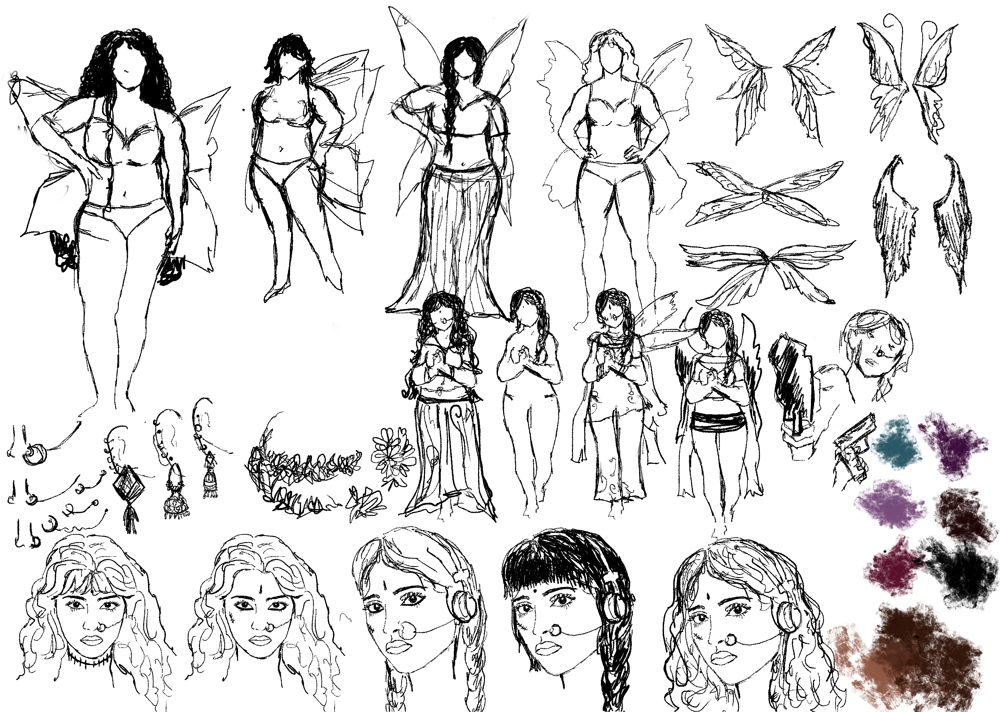
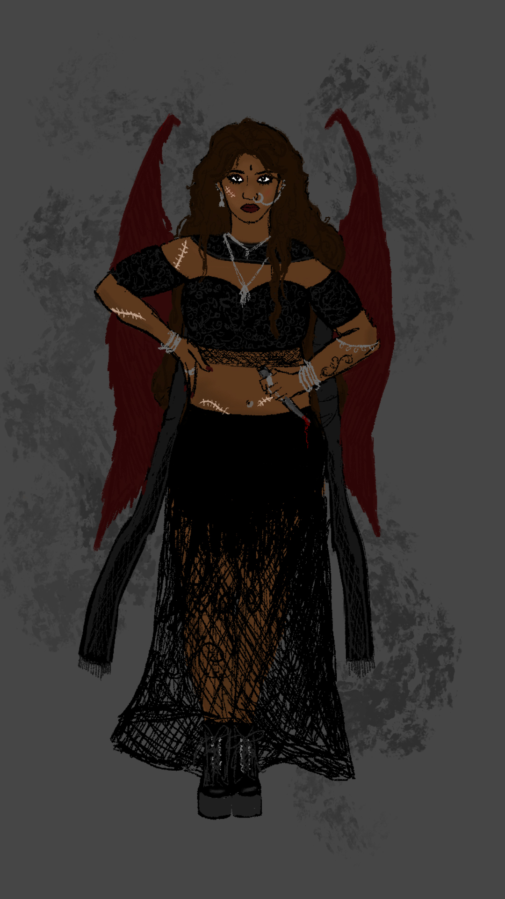

Experimental Media
Janaki
An exploration into animation, character design and world-building. Using Resprite, Adobe Animate, Photoshop, frame-by frame animation for the character, and tween animation for the background and modal.
Janaki is a jaded 20 something, harpy of crow descent. With deep rooted trust issues, a hatred for genocidal monsters, a desire to avenge her mother, and a batch of killer custom-made paisley throwing stars, she is on a quest to revive her best friend and put an end to ruthless destruction, not afraid to use some ruthless destruction herself, as a means to an end (yes, she also carries with her, a questionable moral compass.) She loves alphonso mangos and gothic architecture and hard rock.
Process

